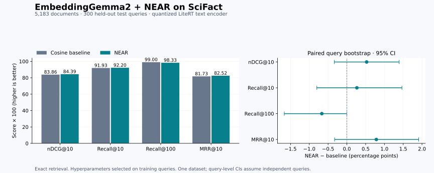

01 / The idea
Compare what remains.
A high cosine score says that two embedding directions align. It does not say which part of that alignment provides the evidence the query needs.
Think of a neighborhood of papers about microarrays. Shared terminology can make many of them close to a query, even when only one addresses its specific comparison. Calling that overlap a “shared topic” is an intuition: an embedding direction is not a decoded word or an explicitly labeled concept.
NEAR averages a document’s neighboring vectors to form a unit reference c, then subtracts the document’s projection onto it. The residual is:
Alignment of the full embeddings.
Alignment after local projection removal.
A query gets its own reference from a precomputed routing table. References differ across documents and queries. Further layers repeat the operation on normalized residuals. The method retains the original view and adds weighted residual views; concatenated keys implement the fused score through one inner-product search. No encoder training is required. [NEAR §3]
In our run, “second signal” means a cosine between two transformed versions of the same encoder’s vectors. It adds a different comparison, rather than new text or another model’s judgment. Projection subtraction is also different from simply subtracting the neighborhood mean.
02 / The experiment
A small encoder.
A frozen comparison.
We compared exact cosine retrieval against NEAR using identical cached embeddings over the full SciFact corpus. This is a transfer experiment on a standard BEIR dataset, not a reproduction of the paper’s eight LMEB tasks.
- Encoder
- EmbeddingGemma2INT4 QAT · text path · LiteRT 0.18.0
- Corpus
- 5,183 documentsScientific titles and abstracts
- Selection / evaluation
- 807 / 300 queriesDevelopment only / held-out test
- Selected NEAR
- L = 1 · α = 0.25Normalized residuals · 768 → 1,536 dimensions
The model is the text path of the 440M text/vision LiteRT package: a 270M text backbone with 768-dimensional output. Images were not used. Inputs used the model-card search/document formatting, an 8,192-token limit, and overflow errors instead of silent truncation. [Checkpoint]
We searched 30 configurations on development: depths 1–3, raw or normalized residuals, and five positive α values. Neighborhood size was 50; routing used up to 4 of 16 anchors. All 300 test queries were retained. Two training queries with exact test-text duplicates were excluded before scoring, leaving 807 development queries.
Inspect the evaluation boundaries
- The document bank is shared between development and test. Queries are held out; related claims can share evidence.
- Hyperparameters were selected before test scoring. No test relevance judgments selected the configuration.
- Clustering uses seeded spherical k-means++, three restarts, and at most 100 iterations. These implementation choices fill details unspecified by the paper.
- Bootstrap intervals use 10,000 paired query resamples with a fixed selected configuration. Related claims may be dependent; selection uncertainty is not included.
- Pretraining exposure to SciFact is unknown. The full-precision backend and optional HNSW branch were not evaluated in this run.
03 / Held-out results
A modest gain, with limits.
The nDCG@10 point estimate improves by 0.53 points. Its paired 95% bootstrap interval crosses zero. This run does not establish a reliable improvement.
| Metric | Baseline | NEAR | Change | 95% interval |
|---|---|---|---|---|
| nDCG@10 | 83.86 | 84.39 | +0.53 | [−0.33, +1.39] |
| Recall@10 | 91.93 | 92.20 | +0.27 | [−0.80, +1.47] |
| Recall@100 | 99.00 | 98.33 | −0.67 | [−1.67, 0.00] |
| MRR@10 | 81.73 | 82.52 | +0.79 | [−0.33, +1.91] |


Recall@5 also fell, from 89.28 to 88.11. On nDCG@10, 16 queries improved, 20 worsened, and 264 were unchanged. The small positive mean reflects the sizes of those changes, not a majority of queries improving.
15.18 → 30.37 MiB
CPU · encoder time excluded
additional to search keys
Building all three candidate layers took 7.14 seconds. Timing is a local microbenchmark, not a device-wide or end-to-end latency claim. Key sizes exclude research caches and ANN graph overhead.
04 / A query that changed
From just outside
to inside the top ten.
Measured · SciFact query 785
Microarray results from culture-amplified mixtures of serotypes correlate poorly with microarray results from uncultured mixtures.
The judged evidence is The PneuCarriage Project: A Multi-Centre Comparative Study to Identify the Best Serotyping Methods for Examining Pneumococcal Carriage in Vaccine Evaluation Studies. It compares serotyping methods and discusses microarray with culture amplification. Retrieving evidence does not mean endorsing the query’s claim.
Recall@10: 0 → 1
One judged relevant document.
Tied for the largest gain with query 128.
A competing document, Microarray analysis of pneumococcal gene expression during invasive disease, had a higher original cosine. PneuCarriage had the higher residual cosine. The weighted difference was enough to reverse this pair.
How much residual weight changes this pair?
| Document | Original cosine | Residual cosine | Fused score |
|---|---|---|---|
| PneuCarriage judged relevant | 0.7263 | 0.2348 | 20.2956 |
| Gene expression competitor | 0.7360 | 0.1591 | 20.2535 |
At α = 0.250, the relevant document leads by 0.0421.
The crossover is α ≈ 0.215. Moving the slider recomputes only this pair from saved scores. It does not rerun retrieval or establish a new top-10 rank. At the measured α = 0.25, the full run moved PneuCarriage 12 → 9.
Its cosine did not increase: 0.7263 became 0.2348 in the residual view. Its advantage over this competitor improved. Describing the removed information as “generic microarray content” is a plausible interpretation, not a proven decoding of the embedding.
This example was chosen after evaluation to explain a large Recall@10 gain, not to tune parameters. A counterexample from the same run: query 185’s judged document fell from rank 1 to 4, reducing nDCG@10 by 56.93 points. Inspect the query trace ↗
05 / The mathematical question
What, exactly,
can we prove?
Projection is exact linear algebra. Better relevance is a conditional outcome.
The discussion began with an apparently simple question: does subtracting the shared component increase similarity to the relevant document? That mixes three different claims. Absolute cosine can rise or fall. Relative ordering can improve or worsen. Neither automatically establishes a gain in dataset-level recall.
For a tractable derivation, assume unit query and document vectors use the same unit reference c. This is an illustrative special case; actual NEAR uses separate local references. Let s = q · d, a = q · c, and b = d · c. For nonzero residuals:
The numerator removes shared alignment. The denominator renormalizes what remains. Both affect the final cosine. Algebra gives an exact condition:
If a = b, then t − s = a²(s − 1)/(1 − a²) ≤ 0. Removing an equally strong shared component cannot increase this cosine. It can still expand a relevant document’s margin: original scores 0.98 and 0.92 become 0.80 and 0.20 when a² = 0.9. Both scores fall; their gap grows from 0.06 to 0.60.
For a relevant document R and competitor C, the shared-reference residual ranking favors R exactly when:
Change the direction. Change the outcome.
q = (3, 1, 0), R = (1, 1, 0), C = (3, 0, 1). R is designated relevant for this constructed example.
The original embeddings slightly favor the competitor.
q = (3, 1, 0) · R = (1, 1, 0) · C = (3, 0, 1)
The bars show cosine on the fixed interval [0, 1]. Removing x yields 1 versus 0. Removing z instead yields 0.8944 versus 0.9487, making the wrong preference stronger. These axes illustrate arithmetic, not decoded semantic features.
What changes with NEAR’s separate references?
Set a = q · cq and b = d · cd. Expanding the actual residual dot product gives:
Divide by √(1 − a²)√(1 − b²) for normalized residual cosine. Extra cross-terms appear; the shared-reference shortcut no longer applies. There is still no relevance guarantee. Zero-length residuals have undefined mathematical cosine; the implementation maps them to zero vectors for numerical stability.
For one-layer NEAR, the condition for overcoming an original ranking error is even more practical:
That explains our measured pair reversal exactly. It does not prove that the chosen references consistently preserve relevance. Also, comparing R’s residual cosine with C’s original cosine mixes scoring views; it is not the comparison used by NEAR.
06 / Third and fourth signals
More removal
can erase the distinction.
There is no monotonic march toward the correct document. Consider q = (4, 2, 1), R = (1, 2, 1), C = (4, 0, 1). Remove x, then y. The first residual fixes the ranking. The next makes every vector point in the same direction.
One removal too many
The competitor wins on the original embeddings.
At two residual layers all three remaining vectors are (0, 0, 1): both cosines equal 1, but the new signal has zero discrimination. The complete fused score still includes earlier views.
The combined score also has an exact condition. Let gℓ = [sℓ(q, R) − sℓ(q, C)]/τℓ, and let ḡL be the average advantage across the current L residual views. Then the final margin is ML = g0 + αḡL. Adding one residual changes it by:
A new signal improves the pairwise margin only if its advantage exceeds the previous residual average. Equal means unchanged; lower means worse—even if it slightly favors R. This comparison concerns one competitor; recall depends on crossing the cutoff against the full candidate set.
Removing exactly the same direction again does nothing further: the projection operator is idempotent. New directions can help, remove evidence, or amplify unstable directions after normalization. Depth is an empirical choice. Our development search selected just one residual layer.
07 / Reproduce & inspect
Keep the experiment
open to inspection.
The repository includes the independent NumPy implementation, frozen protocol, development sweep, per-query metrics, top-100 TREC runs, query trace, and numerical tests. The benchmark core is preserved with its recorded code hashes.
git clone https://github.com/ravisankarg/NEAR.git
cd NEAR
python3 -m venv .venv
source .venv/bin/activate
pip install -r requirements.txt
python scripts/download_scifact.py --out data/scifact
# Download the linked LiteRT checkpoint separately.
NEAR_MODEL=/path/to/model.litertlm bash scripts/run_benchmark.shThe full rerun requires the model and dataset; they are not bundled. The measured checkpoint’s SHA-256 is recorded. A different model, quantization, runtime, or dataset export may produce different results. The fresh-download path is supplied for reproduction; our measured run used locally cached inputs.
python scripts/verify_published_results.py
python -m unittest discover -s tests -v
node tests/test_blog.mjs
python3 -m http.server 8000 --directory docsThe result verifier uses only Python’s standard library. Numerical benchmark tests require NumPy. Browser-lab tests require Node. The site works without a build step, external fonts, analytics, or a CDN. Read the reproduction guide ↗
The original run’s 12 numerical tests passed. Per-query nDCG@10 and Recall@10/100 matched pytrec_eval. Explicit fusion and concatenated-key scoring agreed within 2.86 × 10−5; all top-10 rankings matched. Ten queries had near-tie ordering changes within the top 100, with identical top-100 sets and evaluated metrics.
08 / Sources & evidence
Follow the evidence.
- Luo et al. · NEAR: Neighborhood-Aware Residuals for Memory RetrievalThe method being implemented. This blog’s mathematical examples and derivations are explanatory analysis, not a theorem claimed by the paper.
- EmbeddingGemma2 · LiteRT text/vision checkpointModel identity, parameter breakdown, and quantization. Only its text path was evaluated.
- SciFact · BEIR · MTEB mirrorDataset and retrieval benchmark sources.
- Full experiment recordAggregate and per-query scores, development selection, split audit, and retrieval runs.
- Implementation · Numerical tests · Page data (JSON)Review the arithmetic behind the method and the interactive measured example.
A better score on one query is a mechanism to inspect. A better retriever is a claim to test.